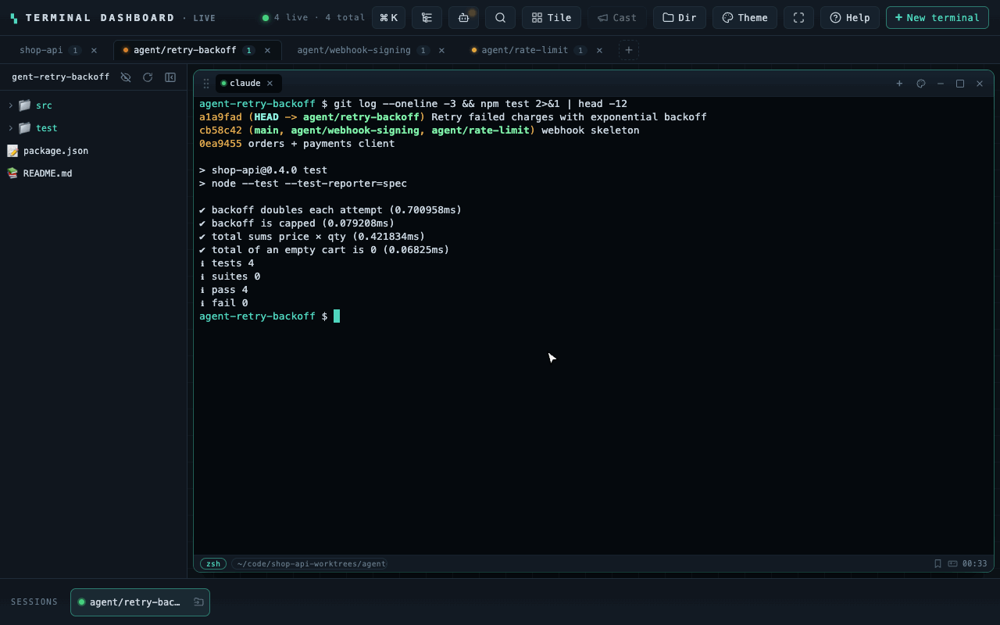

One screen for every coding agent.
A local-first browser cockpit for running AI coding agents — Claude Code, Codex, Gemini — and plain shells side by side. Each window is a real shell on your machine; give every agent its own git worktree (a separate checkout on its own branch), get alerted when one needs approval, and reconnect without losing a session.
npx @kiril6/termdeck
Runs entirely on localhost. Your shells never leave your machine.
The demo is the real UI with no backend — click around, but shells won't run. Install to get live shells.

Run several agents without losing track.
Claude Code, Codex and Gemini each in their own window and worktree — with a clear signal for which one needs you.
One-click agent CLIs
Claude Code, Codex, Gemini, Copilot, Cursor Agent, OpenCode, Qwen Code, Aider — or your own command — in a fresh shell from the palette. When the agent exits you drop back to the local shell, and after a reboot Claude, Codex, Gemini and Copilot tabs come back resumed.
A git worktree per agent
Each agent task is cut into its own worktree and opens as its own project tab — three agents working at once, zero overwriting. An orange dot warns when two of them touch the same file.
Know who needs you
A working agent pulses green on its tab and dock chip, a quiet one pulses amber; one blocked on an “Allow this tool?” prompt goes red — on the tab and its project, with the exact command and Approve / Deny buttons when hooks are on (nothing is answered without your click unless you opt in to a scoped rule — never for risky commands). Run termdeck hooks install to add the optional Claude Code, Codex, Copilot or Gemini CLI hooks and the state is exact, with the current tool and file; without them it falls back to output heuristics. termdeck never answers a prompt unless you click Approve / Deny, or opt in to a scoped rule.
One queue for the fleet
A single popover lists every agent tab across all projects, ranked needs approval → waiting → working. Click a row to jump to it — token totals per agent and project, as the agent reports them (Claude Code, Codex).
Review, then land it
Read-only diff of a worktree against the commit it was cut from — select a hunk and send it, with its file and line range, to an agent tab (typed, never run) — then merge it or open a PR and clean up the worktree, without leaving termdeck. Nothing is deleted without your confirm.
Private by default
Runs on your machine. No cloud, no telemetry, no API keys — your agents’ output never leaves localhost. Optional session logs for an audit trail.
--dry-run to only preview.npx @kiril6/termdeck hooks installWhy not just tmux, iTerm or a pile of tabs?
You get tmux's session persistence plus a point-and-click GUI you don't have to learn — floating windows, projects, and agent tooling in the browser you already have open, on macOS, Windows, and Linux alike.
Everything, one screen.
Six things you'd normally wire together by hand — built in.
Floating windows
Drag, resize, tile into a grid, tabs per pane. Group windows into project tabs and switch context instantly.
Session reattach
Refresh the browser or drop your connection — the shell keeps running. A 60s grace timer holds the PTY and replays the buffer.
Durable with tmux
With tmux installed, shells survive a server restart or crash — not just a browser refresh.
Real filesystem tree
A live sidebar rooted at the active project. Open a shell in any folder; reveal files in Finder/Explorer.
Command palette
⌘K for fuzzy actions, sessions, and reusable snippets. Category chips (Terminals, Agents, Layout, Workspace…) narrow the list — Tab cycles them. Broadcast input to every shell in a project.
Themes & polish
Dracula, Nord, Gruvbox, Tokyo Night, Catppuccin and more. GPU rendering, font zoom, clickable links and file paths, pixel pets.
Built for how you actually work.
The rest of the toolbox.
npm run dev, ssh …, anything.cds and shows the last command and any detected dev-server :PORT — no shell config.⌥1–9 jumps to the Nth window.TD_NOTIFY_URL to an ntfy topic (or any webhook) and your phone buzzes when an agent needs approval; tapping it opens that terminal. Off unless you set it. SetupTD_EDITOR, default code)..log.TD_ALLOWED_HOSTS for tailscale serve. Setup guideTD_LOG_DIR and each shell’s output is saved when it exits — an audit trail for long agent runs.termdeck autostart install, sets up a launchd agent or systemd user unit — preview with --dry-run. Needs a global install (npm i -g) or a clone. Detailstermdeck doctor checks Node, node-pty, tmux, git and the port — offline, with the fix next to each problem.src/a.ts:42) open in the viewer at that line.Shipping steadily.
The latest releases, straight from GitHub.
All releases → Get startedQuick start
Requires Node.js 18+. No build step, no Electron.
npx github:kiril6/termdeck straight from GitHub)npx @kiril6/termdecktermdeck on your PATH for daily use; npx above runs once and leaves nothing behindnpm i -g @kiril6/termdecknode install.js && npm startbrew install tmux--dry-run to preview)npx @kiril6/termdeck hooks install